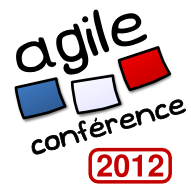

Agile France présente

Le rendez-vous incontournable
de la communauté agile française.
Jeudi 24 et Vendredi 25 mai 2012
Chalet de la Porte Jaune, Paris

Les sessions de Agile France 2011:
Dans la peau du Manager Agile
L'avenir de Scrum : Scrum pour les services
Le Lean Office : pour améliorer la performance administrative
Voyage au centre de l'agilité. L'intelligence des émotions.
Une conversation structurée
Le A3-Driven Problem Solving, par l'exemple
buildr, un outil de build moderne, puissant et efficace
L'histoire d'une transformation Agile à l’échelle
Retour d'expérience des principales difficultés rencontrées par les
managers dans une transition vers une organisation agile
Comment pérenniser l’esprit agile dans votre entreprise ?
Les frontières de l'équipe
Une usine logicielle pour une usine, vers le déploiement continu en product°
Casino Game
Top chef : le carpaccio de code
Leadeship Ethique, Développement logiciel et méthodes Agiles
En quoi "Star Wars" peut vous aider dans votre dynamique d'équipe
Automatisation des tests : le mythe du ROI
Du chaos vers la Standardisation
Le Marshmallow Challenge
Au secours, pourquoi ma vélocité n’augmente-t-elle pas ?
Quand Product Owner rime avec Marketeur - Agile UX et ATDD
Comment prioriser quand on innove ?
Bonnes et mauvaises pratiques du daily meeting
Product Owner : Valorisez vos Epics
Lire du code
L'expérience des billes rouges
Construisez votre produit en racontant des histoires !
Vision, un sacré attracteur pour une équipe auto-organisée !
Mythes, Légendes & Monstres: En route vers le Graal de l'Entreprise Agile
Clinique TDD
Centre de service Agile
Du cerveau au code: "Agile" ou le README manquant
Adopter l'agilité : le kit pour convaincre
Transition organisationnelle et accompagnement au changement
L'amélioration continue réconciliée
Une carte agile de gestion des produits
Atelier de story map, là où tout commence...
Un Modèle Dynamique de Rétrospective (Rétrospectives à la Française)
La programmation en binômes, une pratique rentable !
TDD avec les Transformations
Au-delà du développement agile : retour d'expérience Lean IT
10 ans après... Ma première expérience agile
Comment réussir un projet Agile très court ?
Rétrospectives' lab : décantation
Les bases des méthodes Agiles et Lean
Le parcours de billes : un serious game autour de l'ATDD
Le YoGa du Gout
Questions en cercles, à la Peter Block
l'Agiliste et l'iPhoniste, une histoire de couple
Software Craftsmanship: en pratique
Quand mon produit est un système d'information
Résoudre les conflits avec l'outil "Conflict"
Transition agile - culture du changement ou changement de culture ?
Lean et Agile : piloter l'amélioration continue sur un projet Legacy
Chef, la recette pour automatiser mon infrastructure
Agile et Application Lifecycle Management par l'exemple
Atelier Kanban
Visitez une obeya!
Lorsque SCRUM ne marche pas !
Spécifications éxécutables avec Expect
Remaniement d'architecture
La revue de code : c’est facile !
Agilité et modèles de changement
Quarante ans de crise, dix ans d'agilité, et maintenant?
Pratiques avancées de tests
La Pilule Rouge, des pistes pour la collaboration distante